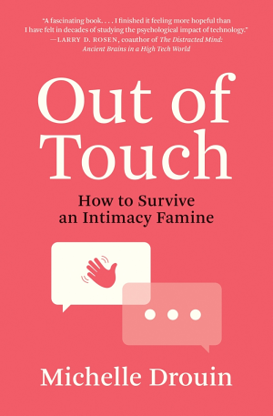
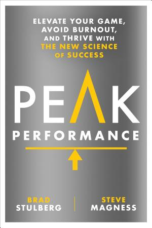

3.1.4 — Noia, silenzio e routine
La noia presuppone il silenzio, e il silenzio è la risorsa più scarsa dell'era digitale. Lo smartphone genera notifiche continue: ogni interruzione frammenta l'attenzione e amplifica la percezione di stress. Hans Selye, il pioniere della ricerca sullo stress, osservò che uno stesso stressor può rafforzare o spezzare a seconda dello scopo che la persona attribuisce all'esperienza. L'epidemia di stress non è metaforica: è endocrinologica (😤 ff.90 L'epidemia di stress). Le parole, a volte, finiscono: ci sono esperienze che trascendono il linguaggio, momenti in cui l'unica risposta adeguata è il silenzio. Restare senza parole non è un fallimento: è il riconoscimento che la realtà è più vasta del vocabolario (😶 ff.41 Non ho parole). Byung-Chul Han, in Vita Contemplativa, sostiene che l'inattività costituisce l'essere umano, distinguendolo dalle macchine — una vita senza pause si deteriora in pura sopravvivenza. Bryan Johnson, fondatore di Braintree e primo classificato alle Olimpiadi del Ringiovanimento[24], propone il metodo Blueprint per rallentare l'invecchiamento[25] con dieta a restrizione calorica del 24% e 100+ pillole al giorno (💊 ff.49.4 Il superuomo che prende 100 pillole al giorno). Sahil Bloom sintetizza: la noia della routine è una tassa per il successo a lungo termine. Ma la routine è per forza noiosa? La stimolazione trans-craniale promette soluzioni meno invasive: dispositivi come Somnee alterano la distribuzione delle onde neurali verso quelle associate al riposo, offrendo un'alternativa alla melatonina (⚡ ff.75 Massaggi al cervello). Wim Wenders, in Perfect Days, offre la risposta opposta: un addetto alle pulizie di Tokyo che trova la perfezione nella ripetizione silenziosa (🕒 ff.108.1 Quale è il vostro Perfect Day?). Ma a volte servono occhi nuovi, non solo silenzio. Il viaggio non è turismo: è ricalibrazione cognitiva. Quando l’infrastruttura scompare — niente Wi-Fi, niente Deliveroo, niente acqua dal rubinetto — emergono i presupposti biologici che il comfort occidentale rende invisibili: aria, acqua, sole. Il confronto con l’India forza una revisione delle priorità: la nostra ansia per il segnale 5G si ridimensiona davanti a chi combatte per l’acqua potabile. Non è idealizzazione della povertà: è la scoperta che il nostro senso di urgenza è quasi interamente costruito (🌎 ff.142.2 Il viaggio come ricalibrazione).
Il lockdown è stato un’eccellente scuola di silenzio forzato, e ha lasciato un’eredità filosofica meno raccontata della sua eredità epidemiologica. Bruno Latour, in Down to Earth, sostiene che la clausura domestica ci ha trasformati in uno scarafaggio — come Gregor Samsa nella Metamorfosi di Kafka — non perché ci abbia costretto tra quattro mura, ma perché ha confermato mentalmente la nostra materialità. Il progetto moderno, da Galileo a Musk, spingeva verso l’alto: razzi, spazio, trascendenza dalla Terra. Il lockdown ha ribaltato la rotta: ritorno al suolo, al corpo, al respiro di una stanza. “Stiamo iniziando a renderci conto che non abbiamo, che non avremo mai, che nessuno ha mai avuto l’esperienza di incontrare cose inerti”. L’inerzia era un’illusione. Il reset di Huffington (🧶 ff.109.3 Sbrigliare un gomitolo in un minuto) dura 60 secondi; il reset di Latour è durato due anni e ha riscritto il rapporto tra Occidente e materia. Non è un caso che i trend del post-pandemia — camminata, scalata, giardinaggio urbano — siano tutti verso il basso, non verso l’alto (🐛 ff.76.4 Trasformati in uno scarafaggio?).
E dieci anni di diario personale possono diventare un podcast in un pomeriggio. NotebookLM di Google permette oggi di convertire un archivio testuale decennale in una puntata di podcast conversazionale — due voci AI che commentano, con un minimo di ironia, ciò che si è annotato per anni. L’esperienza è spiazzante: sentire due “persone” estratte dai propri pensieri parlare delle proprie piccole preoccupazioni produce un effetto straniante, paragonabile a rileggersi in terza persona. Il diario — strumento introspettivo per eccellenza — diventa oggetto esterno manipolabile, non più solo ricordo ma artefatto narrativo. Il passo successivo è ovvio: generare un film della propria vita. Se la capacità di trascendere il sé passa dall’indebolimento dell’ego (🌿 ff.68.4 Meno ego e controllo, più flow e presente), sentire la propria storia raccontata da una macchina è il primo esercizio spirituale compatibile con l’AI. Non per celebrarsi: per distanziarsi (🏋 ff.112.3 Possiamo solo prepararci al meglio).
E prima del pathos, c’è la scrittura a mano. Scrivere invece di dettare, scrivere invece di farsi generare i paragrafi da ChatGPT: è il corrispettivo mentale dell’andare a fare la spesa a piedi o prendere le scale invece dell’ascensore, una rivendicazione di umanità apparentemente inefficiente. Italo Calvino, nella lezione del 1967 Cibernetica e fantasmi, anticipava di mezzo secolo la questione: la macchina — teoricamente — può permutare gli 1 e gli 0 fino a generare tutto lo scibile umano, inclusa la letteratura. La sfida dell’Oulipo, di cui Calvino fu membro, era proprio spingere la combinatoria al limite per vedere dove iniziasse il fantasma, l’inaspettato, la poesia. Oggi ChatGPT permuta su scala industriale, e lascia una traccia stilistica così riconoscibile che ha generato un anti-brand: [53]. La trattino lungo è diventata l’impronta digitale dell’AI — come l’em-dash a fine paragrafo, come gli elenchi puntati compulsivi, come certe transizioni retoriche (“Non solo X, ma Y”) che nessun umano userebbe con quella frequenza. Se Calvino diceva che lo scrittore combina simboli stando “sulle spalle dei giganti”, oggi i giganti sono modelli statistici che tendono al centro: e l’umanità si riconosce dal rumore stilistico residuo, dai tic, dagli errori. Scrivere a mano, in questa cornice, non è nostalgia: è una dichiarazione di provenienza (👻 ff.146.2 Fantasmi e Calvino).
C’è una forma di resistenza all’AI che non passa dal controllo ma dal dolore. Gillian Rose ha scritto Love’s Work nel 1995 mentre moriva di cancro alle ovaie, e la sua sofferenza — anche amorosa — l’ha portata a formulare frasi come: “non c’è democrazia in nessuna relazione d’amore: solo misericordia.” Una permutazione di parole che, tecnicamente, Oulipo o ChatGPT potrebbero generare con i prompt giusti. Ma mancherebbe dell’“aura” di Benjamin, del pathos del com-patire — ciò che il filosofo Evan Selinger chiama solidarietà esistenziale. Contro le infinite permutazioni algoritmiche, l’uomo si protegge con le cicatrici: tracce di esperienza che nessun modello statistico può simulare perché richiedono un corpo che abbia davvero patito. Il pathos — come per l’umanità all’osso di McAfee (🦴 ff.134.4 Umanità all’osso) — è l’unico copyright inviolabile contro l’AI generativa (💔 ff.146.4 Pathos e patire).
E la finitudine ha una misura biologica universale che attraversa venti ordini di grandezza. [54]. La durata della vita segue una regola universale di danno ossidativo cumulativo: come se la vita fosse contabile in respiri, non in anni. Cento milioni è la valuta. Il batterio e il cetaceo spendono a ritmi diversi, ma il conto finale è identico. Questo rovescia la retorica anti-aging: non si vive più a lungo respirando di meno, si vive più a lungo respirando meglio. La longevità funzionale si misurerà più in qualità di metabolismo dei cicli che in loro numero assoluto. Brooks parlava di intelligenza cristallizzata (💎 ff.137.3 Cristalli e Bach); la biologia risponde con qualcosa di più antico: cristalli di ossigeno. L’accumulo di saggezza e l’accumulo di danno mitocondriale sono due lati della stessa valuta, spesa respiro per respiro.
E una dose di prospettiva aiuta a spegnere il rumore interiore meglio dell’algoritmo. [55]. Una persona su sessantasei. GPT-5.4 ha usato questo calcolo per mostrare a Mollick quanto siamo statisticamente fortunati, e la gratitudine esce dal registro della morale per entrare in quello della statistica. Non serve stupore religioso: bastano i numeri. È la stessa funzione degli esperimenti di awe (😲 ff.18.1 L’importanza di staccare il cervello): qualcosa di vasto che spegne la default-mode network e ricolloca l’individuo in un contesto più grande. La differenza è che qui l’awe non viene da un paesaggio o da una cattedrale: viene da una statistica storica elaborata da un LLM. La gratitudine è diventata un output computazionale.
Bryan Johnson può permettersi saune, trasfusioni di plasma e protocolli da centomila dollari l’anno per ridurre le microplastiche nel sangue. Ma il problema è molto più vasto di un biohacker miliardario. Uno studio pubblicato nel 2024 stima che i ftalati presenti nelle plastiche abbiano contribuito a 1,97 milioni di nascite premature e 74.000 morti neonatali nel solo 2018, con 6,69 milioni di anni di vita persi. Non sono sostanze esotiche: sono gli addolcenti del PVC, presenti in imballaggi alimentari, giocattoli, dispositivi medici. Le “everywhere chemicals” — così le chiamano gli epidemiologi — sono ovunque proprio perché rendono la plastica flessibile, economica, indispensabile. Il packaging in plastica non è più solo un problema di riciclo: è un problema di salute pubblica su scala demografica (💀 ff.130.4 La danza macabra; 🩸 ff.130.5 Microplastiche induriscono arterie).
Ma Hirayama, il protagonista di Wenders, non è solo un asceta della routine: è un uomo che guarda le foglie come se le vedesse per la prima volta. Ogni mattina la luce è diversa, ogni albero è un evento. Giovanni Pascoli, nella Poetica del fanciullino, aveva descritto esattamente questa facoltà: dentro ciascuno di noi sopravvive un bambino che si stupisce del mondo, che vede poesia in un aratro abbandonato in un campo d'autunno. Il fanciullino non ragiona per categorie, non classifica: percepisce. È l'opposto dell'adulto iperconnesso che scorre il feed senza registrare nulla. Il film di Wenders è la dimostrazione visiva che la novità non richiede viaggi esotici o esperienze estreme: basta vedere davvero ciò che ci circonda, ogni giorno, come fosse la prima volta (👶 ff.108.2 Con gli occhi del fanciullino). Questa capacità di stupore ha una base neurologica precisa. Uno studio pubblicato su Human Brain Mapping ha sottoposto due gruppi a tre tipi di video: divertenti, neutri e ispiranti — paesaggi mozzafiato, natura maestosa. Il gruppo senza compiti specifici tendeva a distrarsi con pensieri ansiosi (la famosa default-mode network, la rete cerebrale dell'autocritica e della ruminazione), tranne in un caso: davanti ai video che generavano awe, stupore. Lo stupore spegne il chiacchiericcio interiore. Ci strappa dalla prospettiva individuale, alleggerisce il peso delle preoccupazioni, ci ricolloca in qualcosa di più vasto. Bonnie Clearwater, direttrice del NSU Art Museum, sostiene che l'arte produce un effetto analogo: un'eco estetica paragonabile alla fede religiosa — non come dogma, ma come apertura percettiva. Non è misticismo: è neuroscienze. Il cervello, davanti alla bellezza e alla vastità, smette di parlare di sé (😲 ff.18.1 L'importanza di staccare il cervello).
Aldous Huxley nel 1932 aveva già intuito l’alternativa alla censura di Orwell: non il controllo dell’informazione, ma l’eccesso di stimoli — inzuppare il vero in un caos di contenuti fino a renderlo irrilevante. Il feed di TikTok è il panem et circenses di Giovenale sotto steroidi: gladiatori digitali nel Colosseo dell’attenzione (🌍 ff.118.1 Il Mondo Nuovo). Il film Paprika di Satoshi Kon (2006) aveva anticipato visivamente questa architettura non-lineare: ogni tab del browser — come ogni piano di un grattacielo — è una realtà parallela che coesiste con le altre, un “deserto di segni senza un senso univoco” (🌶️ ff.118.2 Paprika — sognando un sogno). Come uscirne? John Cage suggeriva 273 secondi di silenzio — 273 come i gradi Kelvin dello zero assoluto, la temperatura dove ogni moto cessa. La cura non è una detox digitale estrema: è ritrovare la noia come frequenza di base, la groundedness — le radici e i punti fissi dell’identità — prima che il feed le eroda. Correre una maratona, ascoltare canzoni importanti, mangiare cose semplici: non è ascetismo, è calibrazione (🌳 ff.118.3 La cura: albero e silenzi?). I social media innescano risposte di stress paragonabili a quelle di un leone nella savana[26].
C'è un'altra calibrazione che il sistema educativo ha dimenticato. Dopo tredici anni di scuola, la maggior parte degli studenti sa memorizzare nomi, date e poesie — competenze che oggi Google restituisce in millisecondi. I benchmark scolastici misurano il declino: risultati in calo costante in matematica e lettura, mentre l'AI migliora negli stessi test. Ma forse sono i benchmark stessi ad essere obsoleti. L'educazione emotiva, il wellbeing, la capacità di gestire l'incertezza sono quasi assenti dai curricula: nessuno si lamenta di non saper fare a mano la moltiplicazione 4875 per 29, eppure pretendiamo ancora che i ragazzi memorizzino contenuti che le macchine padroneggiano meglio di loro (👨🏫 ff.78.1 Scuola di vita?). In questo vuoto si inserisce una voce inattesa. Arianna Huffington — la donna con più followers su LinkedIn, fondatrice dell'omonimo giornale — ha provato a ribaltare il modello dei media con la rubrica What's Working, un esperimento di informazione centrata sul positivo. L'idealismo si è frantumato contro il business model dell'engagement e dei like, ma l'intuizione resta valida: gli algoritmi sono progettati per massimizzare la reazione, non la riflessione. Il suo progetto successivo con Thrive Global inverte la rotta, creando strumenti digitali per migliorare l'auto-consapevolezza anziché eroderla (👩 ff.109.1 La donna più influente di LinkedIn). Yuval Noah Harari pone la domanda in termini ancora più netti: il problema non è la spesa in intelligenza artificiale, ma il mancato investimento sulla coscienza umana. Google spende più in datacenter che in stipendi dei dipendenti. Come cantava Aloe Blacc, “if I share with you my story, would you share your dollar with me?”. La società algoritmica ci misura, ci consiglia acquisti, diete, allenamenti — ma non ci insegna a conoscerci. Il libero arbitrio non è annullato dalla tecnologia: è annullato dall'ignoranza su noi stessi (💲 ff.109.4 Elemosina dall'AI).
Ma Thrive non si limita alla teoria: ha costruito strumenti concreti. Un esempio è la funzione Reset: un minuto esatto — con canzone preferita, immagini personali e messaggi scelti dall'utente — per staccare la testa tra un meeting Zoom e l'altro. Il filo di Arianna per uscire dal labirinto della società algoritmica, in sessanta secondi. Tecniche di controllo come il tracciamento oculare per misurare l'engagement di un utente[27] sono già ampiamente usate con fini commerciali; Arianna Huffington vuole usare le stesse tecnologie per capire lo stato di stress di un dipendente durante una riunione. A volte, però, non serve nemmeno un'app: Mauricio Estrella ha superato la depressione di un tradimento e divorzio cambiando la sua password in “Forgive@h3r”[28]. Un'azione noiosa e lavorativa — digitare la password decine di volte al giorno — trasformata in mantra, momento di meditazione, accettazione. Il reset più semplice del mondo, senza algoritmi (🧶 ff.109.3 Sbrigliare un gomitolo in un minuto).
Harari parla di coscienza umana, ma c'è qualcuno che l'ha messa in scena davanti a una telecamera. Il regista Jonah Hill ha portato su Netflix le sue sessioni con lo psicoterapeuta Phil Stutz, trasformando un setting clinico in un documentario che milioni di persone hanno guardato come fosse una masterclass sulla vulnerabilità. Stutz parte da un assunto brutale: lavoro, incertezza e dolore sono inevitabili, e nessuna quantità di successo, denaro o relazioni li eliminerà. Non possiamo scappare all'entropia fisica — il corpo invecchia, le certezze crollano, le persone che amiamo se ne vanno. Ma possiamo dare al problema una forma. Con schizzi e illustrazioni disegnati a mano durante la seduta, Stutz invita a rappresentare visivamente il blocco psicologico: un triangolo rovesciato, una spirale, un muro. La piramide delle forze vitali ha una base fisiologica — corpore sano, mens sana — che parte dal benessere del corpo, dal sonno regolare, dall'alimentazione non compensativa. Poi arriva il concetto più potente: l'ombra: l'io del passato di cui ci vergogniamo e che nascondiamo agli altri[29]. Stutz ci chiede di parlare con la nostra ombra, chiedendole scusa e riconoscendo la sua influenza sulle nostre presenti insicurezze. Negli ultimi 70 anni la percentuale di proprietari di case e di persone sposate è crollata dal 50% al 15%[30] — e forse non è solo economia: è un'intera generazione che fatica a guardare in faccia la propria ombra, preferendo l'anestesia dello scroll infinito alla conversazione scomoda con sé stessi (👥 ff.78.2 L'ombra di Stutz).
Negli ultimi 70 anni la percentuale di proprietari di case e di persone sposate è crollata dal 50% al 15%. Stutz parte da un assunto brutale: lavoro, incertezza e dolore sono inevitabili, e nessuna quantità di successo, denaro o relazioni li eliminerà.
Se il libero arbitrio si salva solo con la conoscenza di sé, Naval Ravikant indica una strada precisa: indebolire il senso dell’Io. In un podcast del 2017, l’investitore e filosofo autodidatta confessa di non volere un ego più forte con l’età, ma più debole e smorzato, per vivere nella realtà di ogni giorno come si faceva da bambini. Brad Stulberg, ex-McKinsey e autore di Peak Performance, traduce l’idea in un protocollo: accetta il tuo stato attuale, ancorati al presente, cerca il movimento — perché nel flow la mente non vaga nel passato né pianifica il futuro. La scienza conferma: l’attività della corteccia posteriore, connessa all’ansia, diminuisce quando accettiamo la situazione in cui siamo (🌿 ff.68.4 Meno ego e controllo, più flow e presente: la cura di Naval). Ma l’ancoraggio al presente non basta se manca qualcuno con cui condividerlo. Michelle Drouin, psicologa dell’Indiana University, nel libro Out of Touch documenta una vera carestia d’affetti e propone una to-do-list relazionale: abbracciare qualcuno — o anche solo un animale — per venti secondi al giorno; coltivare amicizie storiche; e, se non ricambiate, cercarne di nuove. Persino la tecnologia può aiutare: non il doom-scrolling, ma una telefonata, un messaggio personale, o un dialogo introspettivo con ChatGPT o Replika. Il focus si sposta dall’individuo alla relazione — ed è un capovolgimento che nessun algoritmo di raccomandazione ha incentivo a promuovere (🤝 ff.97.2 La carestia del contatto). Alla fine della giornata, però, resta la domanda più semplice: cosa ho fatto oggi che mi ha dato soddisfazione? Oliver Burkeman propone la Done List al posto della To-Do List — scrivere cosa di buono si è fatto, non cosa manca ancora. Dan Harris suggerisce di concedersi di saltare un giorno nelle routine maniacali. E Jack King, prete del Tennessee, invita all’ospitalità scruffy: accogliere le persone nella propria vita imperfetta, rivelando il disordine che c’è in tutti noi. Il contrario esatto della timeline curata di Instagram (✏ ff.141.3 Done-List e compiti per le vacanze).
E dalla Done-List di Burkeman si arriva a un protocollo anti-ansia in quattro punti che l’autore sviluppa nel resto del suo libro sulla gestione del tempo. Primo: abbracciare attività atelìche — quelle senza un fine ultimo, dove “fallire” non ha significato: camminare, coltivare un hobby, leggere un romanzo senza progetto di scriverne. Secondo: fissare obiettivi ragionevoli e finiti — lavoro a un testo per trenta minuti, poi ho fatto il mio per oggi. Terzo: tenere la Done List come promemoria di ciò che si è già raggiunto, anticorpo contro la ruminazione delle cose ancora da fare. Quarto: non forzare il carpe diem — focalizzarsi sul vivere il momento è essa stessa una forma di ansia, come pensare di addormentarsi pensando intensamente di addormentarsi. Un protocollo complementare arriva da Rangan Chatterjee nel libro [56]: non eliminare lo stress, ma allenarlo in dosi controllate come si allena un muscolo. Docce fredde, digiuni intermittenti, esposizione al caldo: lo stress misurato e volontario protegge dallo stress cronico e involontario. È la differenza tra il vaccino e l’infezione: lo stesso meccanismo, dosato (4️⃣ ff.44.5 4 modi per trovare una cura).
Come si trascende il sé? Fermando il flusso di infinite alternative, side-hustle e relazioni che il mondo digitale propone, veloci come swipe su Tinder (♾️ ff.44.2 L’infinitudine là fuori). Insomma, diventando essenzialisti. Antoine de Saint-Exupéry, nel Piccolo Principe[38], lo scriveva nel 1943 con una precisione che nessun algoritmo ha ancora eguagliato: “I grandi amano le cifre. Quando parlate di un nuovo amico, non si domandano mai: ‘Qual è il tono della sua voce? Quali sono i suoi giochi preferiti? Fa collezione di farfalle?’ Ma vi domandano: ‘Che età ha? Quanti fratelli? Quanto pesa? Quanto guadagna suo padre?’. Allora soltanto credono di conoscerlo.” Ottant’anni dopo, il feed di LinkedIn funziona esattamente così: metriche, follower, fatturato. Le cifre come scorciatoia per la conoscenza, il dato come surrogato della relazione. Naval[39] dice: meno ego. Stutz[40] dice: parla con la tua ombra. Saint-Exupéry dice: l’essenziale è invisibile agli occhi. E dal 1943 è tutto — un promemoria che vale anche per come raccontiamo le storie positive (➕ ff.59.3 L’importanza di raccontare storie positive; 🤴 ff.89.3 L’essenziale è invisibile agli occhi).
Cosa vogliamo, davvero, da un anno nuovo? Oltre alla libertà dalla pandemia, s'intende. Giacomo Leopardi, nelle Operette morali, mette in bocca al Passeggere una domanda disarmante: “Oh che vita vorreste voi dunque?” Il Venditore risponde: “Vorrei una vita così, come Dio me la mandasse, senz'altri patti.” Una vita a caso, senza saperne altro avanti — come non si sa dell'anno nuovo. Due secoli dopo, la risposta più onesta ai buoni propositi resta la stessa: accettare l'incertezza invece di pianificarla. Ma tra i vari propositi, uno almeno è universale e misurabile: allenatevi di più quest'anno. Non servono filosofie complesse, basta muoversi (🐆 ff.7.7 Bisognano, signore?; 🌳 ff.35.5 L’infinito di Leopardi secondo l’AI).


Una visualizzazione di FlowingData mappa con chi trascorriamo le ore della giornata, suddivise per sesso, età e giorno della settimana. Le distribuzioni cambiano in modo prevedibile ma non per questo meno inquietante: dopo i cinquanta il tempo si concentra quasi esclusivamente sul partner, e chi un partner non ce l’ha precipita in un vuoto relazionale che nessun feed può colmare. Se i dati dicono il vero, la solitudine dei single oltre una certa soglia anagrafica non è un disagio individuale ma una crisi di salute pubblica.
E se la risposta fosse più semplice — e più scomoda — di quanto pensiamo? Forse siamo semplicemente diventati più individualisti. La società contemporanea spinge a ottimizzare ogni aspetto della vita: carriera, corpo, tempo libero, persino il sonno. In questa corsa all’ottimizzazione individuale, la ricerca di un partner diventa un’altra voce nella lista delle cose da fare — e talvolta la prima ad essere depennata. Viviamo in un mondo radicalmente diverso da quello dei baby boomer, con assunzioni valoriali, finanziarie e sociali inesplorate: quanti figli avere, quante case possedere, quante generazioni far convivere sotto lo stesso tetto. Le vecchie risposte non funzionano più, e le nuove non sono ancora state formulate. Non è crisi: è transizione, ma senza mappa (1️⃣ ff.77.5 O una scelta individualistica?). Il numero tre, intanto, resta magico nelle dinamiche relazionali. Secondo un sondaggio britannico, tre è il numero di appuntamenti necessari perché una donna decida di andare oltre; tre i giorni che un uomo dovrebbe aspettare prima di richiamare dopo il primo incontro. La distribuzione temporale delle tappe di coppia — dal primo bacio alla convivenza, dalla dichiarazione d’amore alla decisione di avere un figlio — racconta una coreografia sociale che nessun algoritmo di matching ha ancora decifrato (👰 ff.13.3 Trend relazionali).
Viviamo in città, dicono le statistiche: settanta per cento in Italia, ottanta negli Stati Uniti, cinquantacinque nel mondo. Ma la definizione è generosa — basta un agglomerato di duemila anime per essere “urbani”. Se alziamo la soglia a un milione di abitanti, il quadro cambia: in Europa i veri cittadini sono meno del venti per cento, in Australia il quaranta, negli USA il sessanta. La Cina è l’eccezione: là l’urbanizzazione reale galoppa. Il dato conta perché la città non è solo un luogo: è una densità di servizi, opportunità, e compromessi — e confondere un paese di provincia con una metropoli falsifica ogni politica pubblica (🏙 ff.34.1 Sempre più cittadini). Servizi che, peraltro, possono scomparire con una frana. Nella bergamasca un tornante è ceduto dopo piogge torrenziali, isolando un’intera valle. Le previsioni più ottimistiche parlavano di fine 2025 — potrebbe arrivare prima l’AGI. Il Morandi a Genova e le banconote nel portafoglio ce lo ricordano: in Italia il nuovo è più eccitante — nuovo ponte di Calatrava, nuova bici — ma la manutenzione è un verbo che nessuno coniuga volentieri. Josh Wolfe dice “entropy is always eating”: nelle infrastrutture come nella vita, il degrado è l’opzione predefinita (🚧 ff.110.1 Tutte le strade portano alle buche di Roma). E quando le infrastrutture cedono del tutto, il velo si squarcia. Un viaggio in India e Nepal rivela quanto la normalità europea sia un’eccezione su scala globale: acqua corrente, elettricità stabile, aria respirabile non sono “il minimo” ma un privilegio statistico. Su otto miliardi di persone, la maggioranza vive senza ciò che noi diamo per scontato. Non siamo noi la norma: siamo noi gli alieni (🌎 ff.142.1 Siamo noi gli alieni).
E se il problema non fossero le infrastrutture fisiche, ma quelle mentali? Marshall McLuhan lo aveva intuito nel 1967, in un libro dal titolo profetico: The Medium is the Massage. Il mezzo è il massaggio — non il messaggio, ma la stimolazione sensoriale che modella la percezione prima ancora di trasmettere contenuto. Sessant’anni dopo, viviamo immersi nella conferma più radicale della sua tesi: i feed algoritmici non mostrano la realtà, la costruiscono. Ogni scroll è una dose calibrata di dopamina[17] che ci tiene ancorati alla simulazione — e quando la bilancia piacere-dolore si inclina troppo da un lato, il cervello compensa con disforia. Un video su YouTube propone la soluzione all’ipermodernismo dei social in una frase tanto semplice quanto impraticabile: prestare attenzione a ciò che accade. Ma la domanda rimane: possiamo davvero liberarci dalla simulazione quando il simulatore è il nostro stesso schermo? E quando persino la consapevolezza del meccanismo viene riassorbita dal feed sotto forma di contenuto virale sull’attenzione? (👨💻 ff.117.4 Liberarci dalla simulazione degli algoritmi?).
La simulazione non ha bisogno di complotti: basta l’economia. I ricavi pubblicitari della TV notturna statunitense sono crollati del 50%, da 439 milioni di dollari nel 2018 a 220 milioni nel 2024 — un dimezzamento in sei anni che racconta la fine di un’era. Non è solo un problema di audience: è il segnale che l’attenzione collettiva ha cambiato indirizzo. Colbert, Fallon, Kimmel parlano ancora a milioni di spettatori, ma il vero late show è il feed di TikTok alle due di notte, dove l’algoritmo non ha bisogno di copione, ospiti o applausi registrati. La TV lineare muore come il giornale di carta: non perché il contenuto sia peggiore, ma perché il formato è incompatibile con un cervello addestrato ai 15 secondi (📺 ff.8.1 Il tramonto della TV notturna). La crisi dei media ha una radice strutturale: un sistema di incentivi che premia il volume, non il valore. Isaac Asimov, con la lucidità che solo la fantascienza sa offrire, aveva immaginato questo scenario in un saggio del 1964: un’aristocrazia mondiale supportata da sofisticate macchine schiave e nuovi programmi educativi per gestire l’ozio creativo. La profezia è quasi letterale: oggi l’AI scrive paper, conduce talk show virtuali, genera contenuti a costo zero. Ma Asimov aggiungeva un dettaglio che i tecno-ottimisti trascurano: in una società dove le macchine fanno tutto, il lavoro più difficile diventa decidere cosa fare della propria libertà. La TV notturna muore, la scienza si corrompe, le macchine avanzano — e noi, nel mezzo, cerchiamo ancora di capire se il problema sia troppa informazione o troppo poca saggezza (🤖 ff.127.4 L’aristocrazia delle macchine).
Di fronte a questa valanga di stimoli, la risposta contro-intuitiva è sottrarre. Il giornalista americano David Epstein paragona il nostro cervello a un albero di Natale eccessivamente addobbato: troppi ornamenti compromettono la struttura, non la arricchiscono. In Texas, gli avvisi sulla sicurezza stradale hanno aumentato il carico mentale causando più incidenti; l’esercito americano ha dovuto ridurre gli equipaggiamenti dei soldati perché li appesantivano troppo. Addobbare eccessivamente non sembra salutare[49]. Leidy Klotz, in Subtract[50], propone di sottrarre, rimuovere, semplificare: di fronte a un problema, invece di cercare un nuovo prodotto o un nuovo abbonamento, ci chiediamo cosa possiamo togliere. La vera ottimizzazione è spesso una rimozione, non un’aggiunta. La noia e il silenzio non sono assenza di stimoli: sono lo spazio in cui il cervello si riorganizza, consolida, recupera. Chiedere che ci venga tolto qualcosa è forse la richiesta più rivoluzionaria che possiamo fare nell’era dell’abbondanza digitale (🎄 ff.79.4 L’effetto albero di Natale).